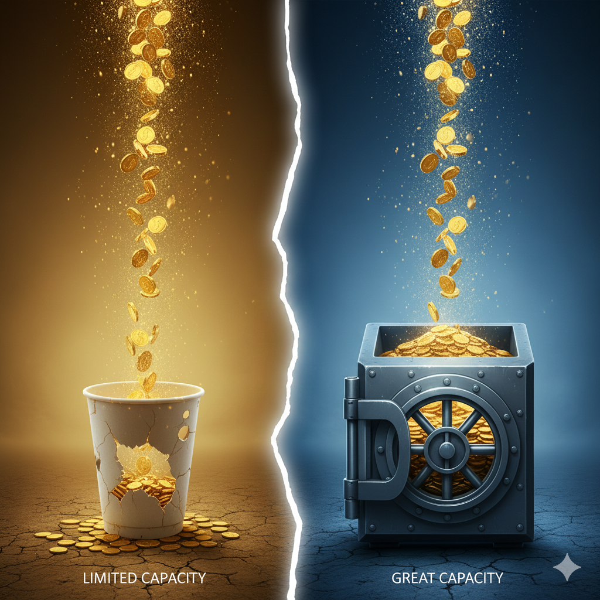

坦白說，我現在聽到「顯化」這兩個字，會感到一絲疲倦。
並不是我不相信意念的力量，而是這個詞在市面上已經被過度包裝成一種「許願魔法」。彷彿只要坐在家裡冥想，宇宙就會自動把訂單送到你門口。
我更願意用一個工程師思維、務實的角度來重新定義它：這其實就是「塑造未來」的過程。
這不是魔法，這是大腦科學。
我那個價值 1,500 萬的慘痛教訓
我也曾經迷信過。那時候為了求財，我特地去龍鳳宮拜媽祖，心裡極度虔誠地祈求：「拜託給我一台 1,500 萬的跑車訂單，讓我能做成這筆大生意。」
神奇的事情發生了。隔沒多久，真的出現一位非常有錢的大客戶，主動請我幫他找一台限量的稀有跑車。
你看，這是不是神蹟？絕對是！神明把運氣送到了。
但是結果呢？那時候的我，對超跑市場的稀缺性不夠了解，專業知識也不足。當客戶問了幾個深入的專業問題：「這台車的年份差異在哪？後勤維修怎麼處理？這台車的保值性如何？」
我當場愣住，完全回答不出來，只能支支吾吾。
最後，那張訂單沒有成交。眼睜睜看著 1,500 萬的機會從指縫中流走。
那一天我終於理解：神明可以給你最好的運氣，但祂無法替你展現「實力」。
別把未來寄託在不可控的事物上
為了業績好，我曾去拜四面佛、拜龍鳳宮、石龍宮，甚至為了求成交，在我的辦公桌上擺陣法。
但後來我發現，如果我只是迷信、只是在腦袋裡面「想」，我的未來，包含家庭、感情、財富與健康在內的一切，都不會發生任何改變。
孔子曾說：「務民之義，敬鬼神而遠之，可謂知矣。」
我尊敬鬼神的存在，也尊敬這股能量，這不代表它們沒有，但我們不需要去依賴那些無法證明、不可控的東西。
行為，是承載財富的「容器」
什麼叫做「吸引力法則」？我認為想法確實會吸引人事物來到你身邊，但行為才是真正承載這一切的能力。
舉個例子：你有個強烈的想法想要賺 1 億，那身邊一定會有人帶著 1 億的機會來到你旁邊，成為你的貴人。但是，你的行為與習慣是你的「容器」：
1. 容器太小：
如果你的習慣只能撐住 100 萬，那你最後就只能賺到 100 萬，就算機會帶來了 1 億你也留不住。
2. 容器夠大：
只有當你的行為、智慧與抗壓性撐得住 1 億時，你才能真正接手並駕馭這筆財富。

一、別試圖跳過「科學」去談「玄學」
常有人說：「科學的盡頭是玄學。」這句話沒錯，玄學確實解釋了許多科學目前無法觸及的維度。但很多人的問題在於，還沒搞懂科學，就急著躲進玄學裡。
就像《六祖壇經》裡慧能大師說的：「佛法在世間，不離世間覺，離世覓菩提，猶如求兔角。」
如果你忽略現實世界的規律，只想透過神祕學來尋找人生的解答，就像去兔子頭上找角一樣，是徒勞無功的。我們先從科學的角度理解世界，行有餘力，再去探究那些不可見的領域。
二、冰山理論：由上而下的「刻意練習」
佛洛伊德的冰山理論告訴我們：
冰山上（意識）： 是可見的行為、現實的成果。冰山下（潛意識）： 是不可見的信念、價值觀。
很多人誤以為所謂的「心想事成」就是直接去修改「冰山下」的潛意識，每天對著鏡子喊口號。但在我看來，如果不改變「冰山上」的具體行為，冰山下的結構根本不會動搖。
《刻意練習》這本書揭示了一個核心真理：大腦具有可塑性。
你的大腦神經迴路，是透過你每一次的行動被重新佈線的。如果你不相信某件事，它就不會成為你的未來。但「相信」不是憑空產生的，它是透過你在現實生活中一次又一次的行動、獲得反饋，大腦才會真的採信：「喔！原來我真的是這樣的人。」
三、從「想要」到「成為」：身份認同的關鍵
這就來到了《原子習慣》提到的三個層次：改變結果、改變過程、改變身份認同。
最高級的習慣養成，是「身份認同」的改變。
大多數人停留在「我想要變富有」（結果）；
但真正能重塑未來的人，專注的是「我是一個具備富人思維與執行力的人」（身份認同）。
這是一個很殘酷卻真實的邏輯：你永遠無法得到你「想要」的東西，你只能得到你「是」的東西。
如果只學冰山下的玄學，而不學冰山上的行動，你會感到迷惘。如果只學冰山上的行動，而不學冰山下的心法，你會容易內耗。
四、命運的塑造步驟
心理學家 William James 說過：「思維改變行為，行為決定習慣，習慣決定個性，而個性將決定你的命運。」
基於此，我認為塑造未來是有具體步驟的：
建立成長型思維： 你一定要明白，能力不是天生的，你是可以培養任何能力的。理解大腦的可塑性： 人腦不會停止連結，一旦你開始學習並行動，你的大腦就會建立新的神經迴路。執行3F法則練習： 這就是《刻意練習》提到的「心智表徵」，透過不斷的優化與修正，讓行為成為本能。 專注→回饋→修正
人如其思
「You are what you eat，You are what you think」（人如其思）
真正的力量，不是向外求神問卜，
而是向內透過大腦的可塑性，用極度理性的刻意練習，去重塑你的神經迴路。
當你的行動（冰山上）足夠堅持，你的潛意識（冰山下）自然會重新架構。
這時候，未來不需要你去「求」，它自然會「顯」現在你面前。
「別等待奇蹟降臨，你本來就擁有『塑造未來』的超能力。」
🔧 你的業績卡住了嗎？因為我也走過那段「心累」的路，所以我懂你的痛。如果你想知道...你的「業務原廠設定」是適合開發還是穩定成長？你容易卡在「開發」、「開口」還是「成交」？👇 點擊連結加入 LINE私訊「想知道銷售天賦」，15分鐘幫你找到業務專屬天賦!https://line.me/ti/p/jzdho94spl